Exp Lane adalah lane yang diperuntukan oleh pemain yang lebih membutuhkan level daripada gold. Mereka membutuhkan exp yang lebih banyak agar skill level mereka bertambah dengan cepat dan bergabung di dalam pertempuran secepat mungkin. Hero bertipe Fighter atau semi Tank adalah yang sering digunakan oleh pemain dengan role sebagai Exp Lane. Pasalnya, hero Fighter mempunyai kemampuan bertarung yang baik mulai dari awal, pertengahan, ataupun akhir permainan meskipun gold yang dia miliki tidak terlalu banyak.
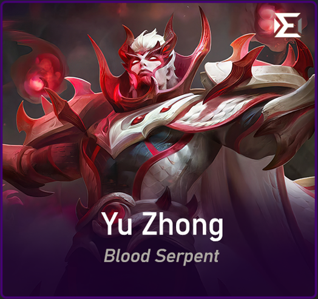 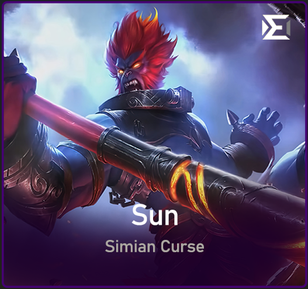 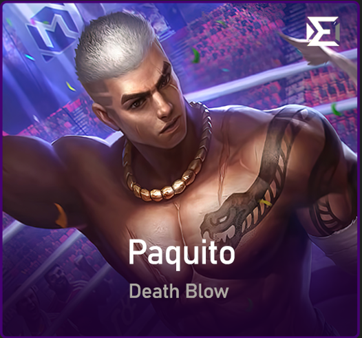Gold Lane mampunyai tugas utama di awal permainan untuk melakukan farming. Pemain ini harus mempunyai skill last hit minions yang bagus karena gold yang didapat juga akan bertambah besar. Seorang Gold Lane membutuhkan gold yang banyak untuk membeli item core mereka. Biasanya seorang Gold Lane akan bermain aman terlebih dahulu pada saat awal permainan. Dia bisa bermain aman di bawah turret ataupun bersama tank tim melakukan farming dengan agresif. Perannya baru akan terlihat jelas pada akhir permainan saat teamfight sering terjadi. Gold Lane juga harus mempunyai skill positioning yang bagus dan bisa memberikan banyak damage tanpa terculik oleh hero-hero lawan.
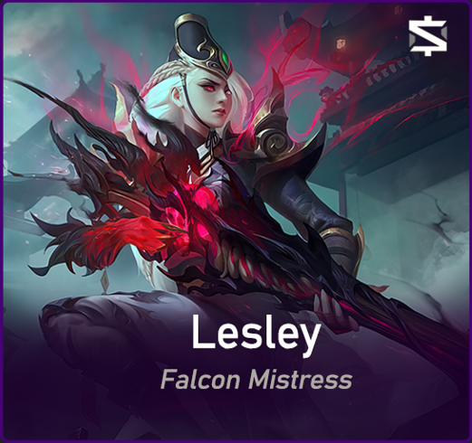 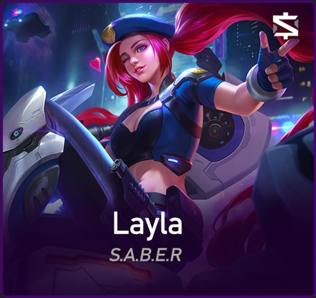 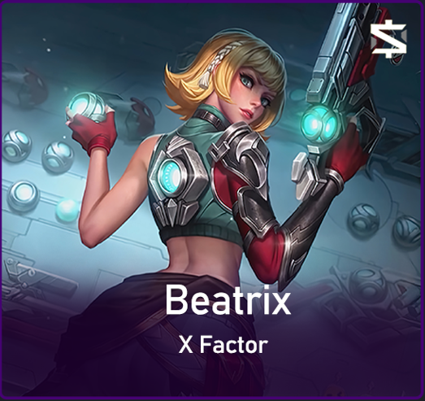Peran sebagai Jungler adalah peran yang penting namun mempunyai kseulitan yang tinggi. Tugas utama seorang Jungler adalah melakukan farming di area hutan dan melakukan roaming/ganking menuju 3 lane yang ada. Tingkat keberhasilan gank seorang Jungler ditentukan oleh kemampuannya membaca peta, pergerakan lawan, dan mengesekusi gank yang dilakukan. Kemenangan dan keunggulan tim pada awal permainan juga ditentukan oleh bagaimana Jungler menjalankan rolenya dengan baik.
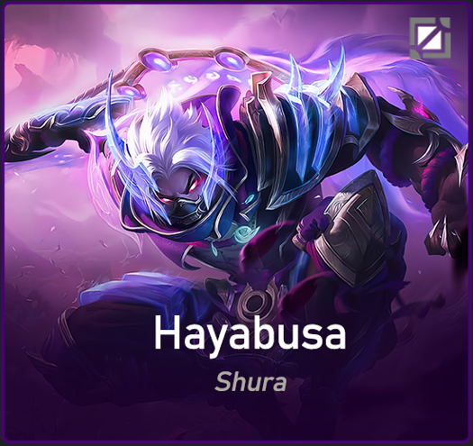 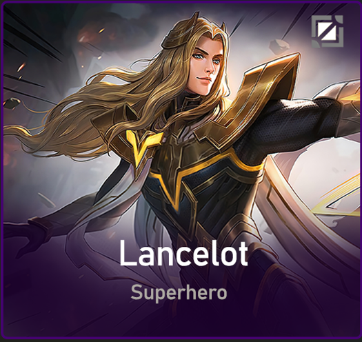 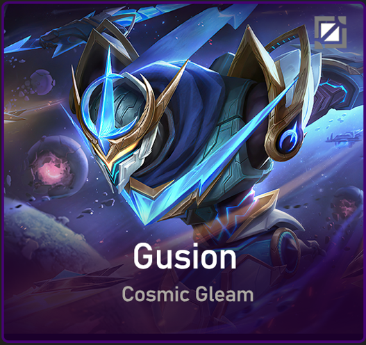Mid Lane adalah salah satu role yang paling penting di dalam game. Mereka membutuhkan gold banyak serta level tinggi dalam waktu yang singkat. Oleh karena itu, seorang Mid Lane harus mempunyai skill farming dan membunuh minions yang bagus. Hal ini bertujuan agar seorang Mid Lane bisa menghasilkan damage yang cukup besar pada saat late game.
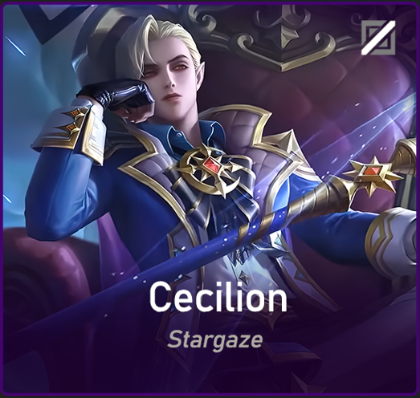 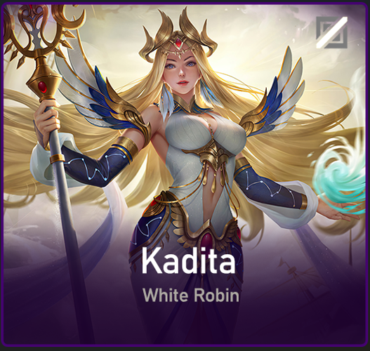 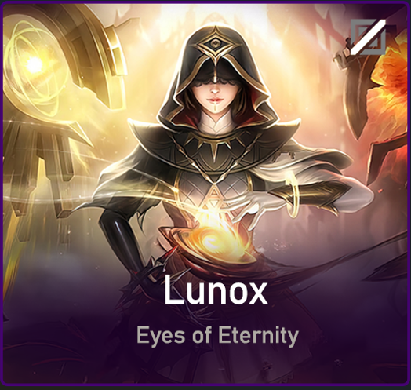Role pemain terakhir di dalam tim Mobile Legends adalah Tank/Support. Meskipun role ini diremehkan dan terkesan tidak berguna, namun sebetulnya role Tank/Support juga menjadi penentu kemenangan sebuah tim. Role Tank/Support mempunyai tugas utama untuk membantu setiap pemain di dalam pertempuran dan siap untuk menerima damage tertinggi saat teamfight berlangsung.
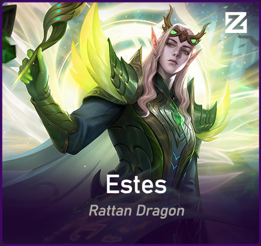 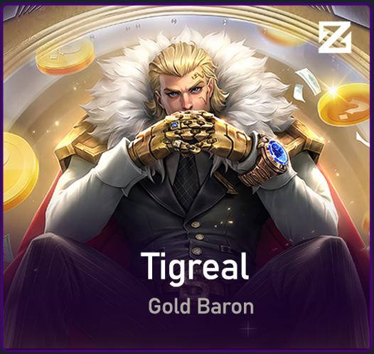 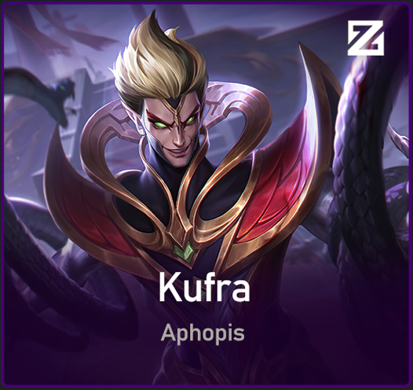